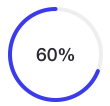
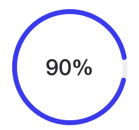
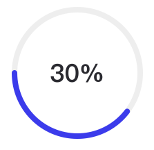
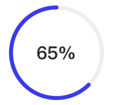

织网是什么？
织网是通过信息化技术和互联网的方式优化整合大量包括自有工厂在内的生产工厂，并藉由智能匹配算法为您提供最佳生产服务的线上生产平台。
-
三天出样
包工包料
-
40件起接
全息生产
工厂工价
-
按出厂价
快速物流
-
强大设计团
内部竞选模式
相较于传统OEM/ODM厂家的六大优势
01
严选工厂
注重经验，持续考核
严选工厂
注重经验，持续考核
- 审核严格。织网审核工厂入驻申请时首先要实地考察，了解工厂的过往经验以及服务品质，目前织网80%工厂拥有十年以上的从业经验，并且为许多品牌做过代工
- 评分体系。您拥有为您工厂打分的权利，织网拥有完善的评分体系，每个季度会根据评分清理落后工厂，保证织网工厂的高品质
- 资源协调。织网独有的OMES系统赋予织网工厂实时协同生产的能力，每家工厂都可以通过整个织网工厂实现最优化配置，更快更周全的为您提供服务
02
追求品质
精选面料，层层质检
追求品质
精选面料，层层质检
- 品质第一。织网工厂因为系统节省了大量管理和排期时间，轻松保证速度和货期，更多时间精力用于质量把控
- 自主监督。织网OMES系统的协议共识机制让生产线的每个工序岗位既是执行者，也是监督者，形成阿米巴模式，极大提高员工的自主监督意识
- 专业把关。入库环节由专业QC团队把关，按照国际标准验货，ISO9001质量认证
03
货期保障
智能管理，准时交货
货期保障
智能管理，准时交货
- 系统预测。织网OMES系统会实时分析生产线的生产能力从而预测货期，并提前预警
- 资源调配。织网所形成的工厂网络可随时调配匹配资源支援赶货产线并进行实时协同生产，保证货期
04
强大产能
工厂网络，系统加持
强大产能
工厂网络，系统加持
- 工厂众多。织网工厂基于信息化系统相互连接，产能共享
- 更强的管理模式驾驭更大的产能线。OMES系统可以同时协调资金、物料、人力多方面的资源管理，基于OMES可以做到传统工厂十倍以上的人力、物料、生产管理
05
柔性服务
实时沟通，随时追加需求
柔性服务
实时沟通，随时追加需求
- 地理匹配。织网在满足您的生产需求的前提下会优先匹配地理位置离您较近的工厂，让您可以随时进厂验货
- 全息生产。生产过程中您可以通过手机实时查看生产进度、送货进度，并随时通过手机追加需求
- 24小时服务。织网在生产前、生产中、生产后都会持续为您服务，保证您能获得满意的生产体验
06
透明价格
价格透明，不赚差价
透明价格
价格透明，不赚差价
- 不赚差价。传统生产大部分是大厂或者中间商接单然后分发给工厂、其他厂家生产，中间赚取不菲的差价，而在织网您的需求是直达工厂的，没有任何人中间商
- 透明价格。织网在线下单打版成功后您可以看到生产的全部价格组成，包括各个物料成本、工序费用，透明生产，让您放心下单
在线生产给您前所未有的便利
在线下单，系统根据需求智能匹配生产力，并分配管家保证快速响应您的需求

一键下单

线上支付

智能匹配

进度跟踪

送货上门
-
快速打样
管家根据您提供的信息安排团队和工厂绘制吓数图并制造成衣
样衣调整
快速响应


-

提高良品率
-

提高准时率
-

缩短生产周期
-

排除纸张浪费